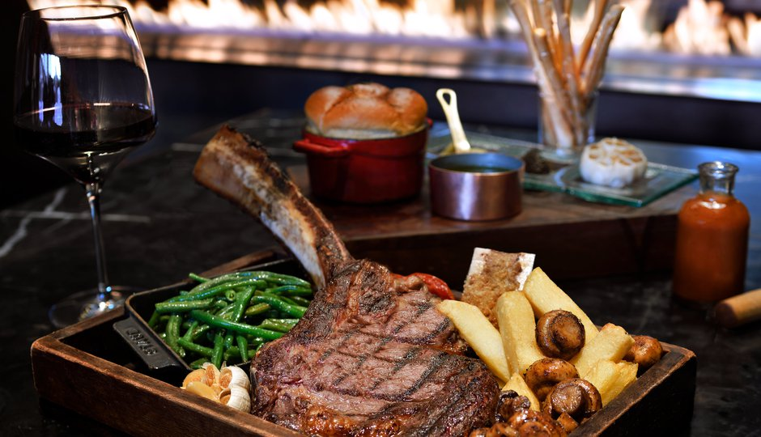
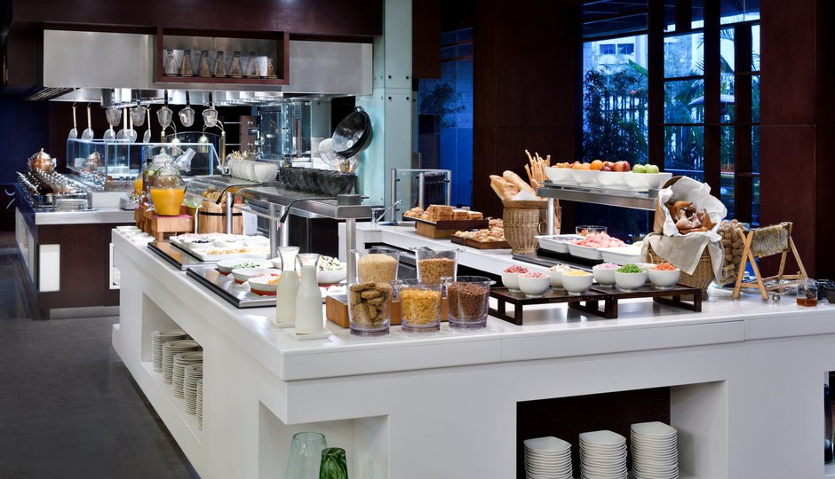
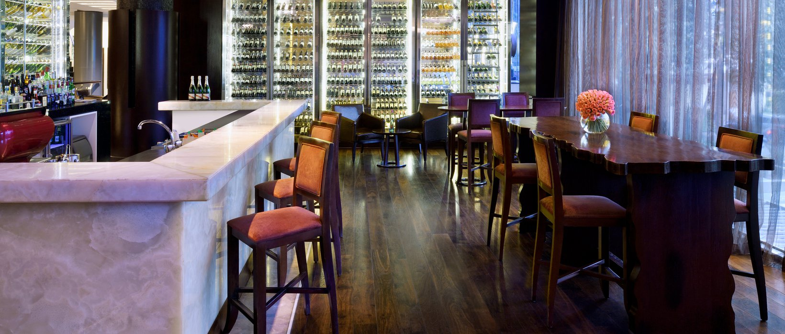
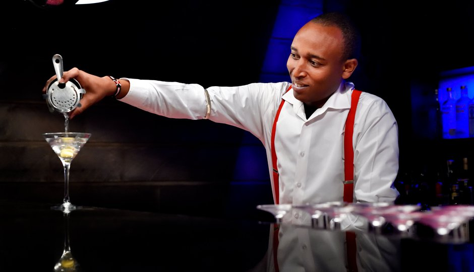
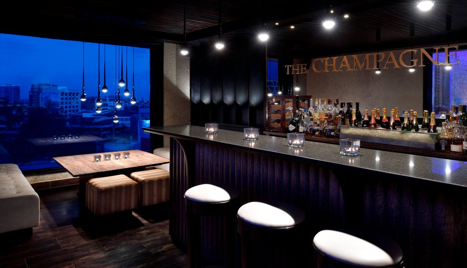
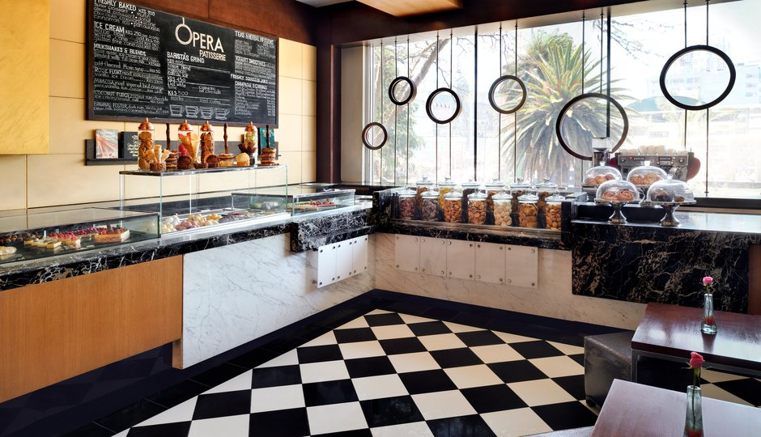

Graze Steakhouse
Sankara Nairobi's signature restaurant,
Graze, is designed to indulge your inner gourmand.
Graze is a modern take on the New York-style steakhouse, offering aged beef,
succulent seafood and indulgent desserts paired to perfection with eclectic wines and whiskies
from some of the finest producers in the world.
Special limited time offer* - book a lunch at Graze online and get 10% off your bill!


Artisan
Situated on the hotel’s first floor,
Artisan showcases the finest global cuisine with a
live show kitchen and an outdoor terrace. The culinary philosophy here revolves around fresh,
seasonal and organic produce served in an authentic yet contemporary presentation with each dish
revealing the chef’s personal touch.
The Gallery
In the evening,
HappyLand Nairobi's stylish and elegant wine bar
offers an intimate space in which to unwind and get together with friends.
By day, it is also perfect for small business meetings or working in peace and quiet.


Sarabi Rooftop Bar
With sweeping views over the Nairobi skyline,
the rooftop Sarabi Rooftop Bar is the city’s premier place to meet, eat and enjoy.
By day, the open-air pool deck provides a great escape from
the buzz of the city with healthy juices and light revitalising cuisine.
The Champagne Bar
Located on the seventh floor,
The Champagne Bar is a place to relax, indulge and watch the world go by.
Our carefully selected beverage list is comprised of champagnes, champagne cocktails and
an extensive array of the finest single malt whiskies.


Opera
The latest exciting addition to Sankara Nairobi is the Parisienne themed Opera Patisserie.
It tells a story of a unique and sophisticated sensory experience for the ultimate dessert lover.
Located on the First Floor and identified by it’s stylish design.